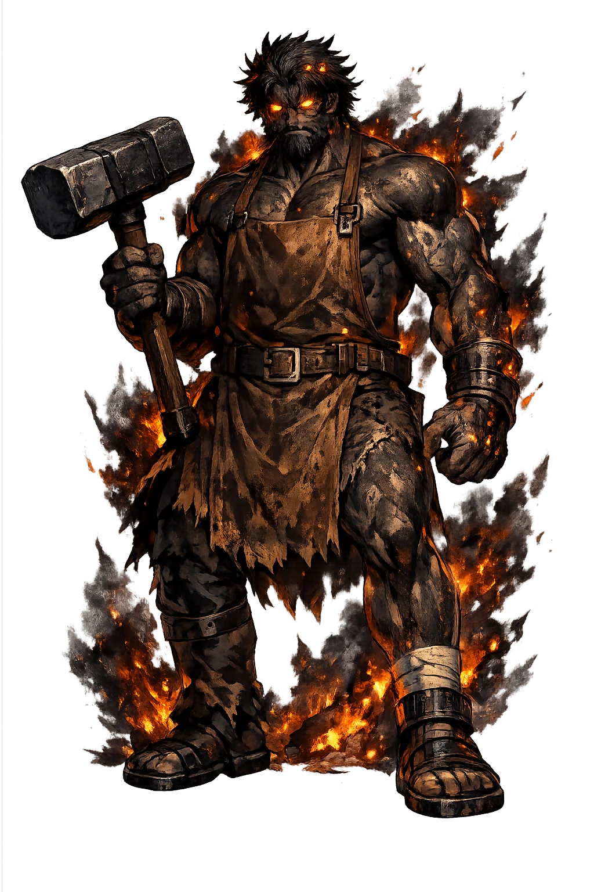

The Authentic Orthography
Fire, Forge, Craft · The Fire that Serves

Unicode restoration and ASCII comparison
VVLCANVS
The name in its original Roman form. Vulcānus (VVLCANVS) is attested in the source tradition — “Possibly from fulgere (to flash) or a pre-Roman fire root”. Its macron-length vowels carry the full phonetic and orthographic weight of the source tradition.
vulcanus
Reduced to plain vulcanus, the name loses everything that made it specific: macron-length vowels. What remains is an ASCII string that machines can parse but that no longer speaks with its original voice.
Vulcānus
The Unicode restoration recovers what ASCII flattened. Vulcānus restores macron-length vowels, returning the name to its original written dignity. The domain encodes to Punycode, but the browser displays the truth.
Vulcānus.com → xn--vulcnus-v3a.com
The non-ASCII characters in Vulcānus are encoded while the ASCII remains visible. To the DNS, it is Punycode. To humanity, it is Vulcānus.
How Vulcānus travels from ancient script to the modern URL
Owned, ideal, and ASCII forms of Vulcānus
Vulcānus
Restores VVLCANVS. The live temple domain — vulcānus.com.
vulcanus
Flattens VVLCANVS. The plain ASCII fallback — what DNS and legacy systems see.
How Vulcānus was spoken
Forge, Volcano, and the Bonfire of Aversion
Vulcānus is Rome's ambivalent fire: the destructive flame that must be kept outside the walls and the tamed forge-fire that arms the state. His festival burns fish alive in midsummer — not for food, but to buy the city's safety from the god who burns cities.
"The Softener" — his title as the smith who coaxes iron, taming fire into craft.
August 23: live fish thrown into bonfires, a substitute-offering against the fire's hunger for the city.
His open-air altar in the Forum — above the Lapis Niger, at the city's oldest sacred ground.
The island Vulcano, where his hammerings were heard beneath the smoking mountain.
Stories of Vulcānus
Roman myth borrowed Hēphaistos' stories for him, but his cult is older and darker than the smith of Olympos: Vulcānus is first the fire that must be averted.
At the Volcanalia, the hottest and driest month, Romans threw live fish from the Tiber into bonfires at the Volcanal. The calendars explain the rite as substitution: souls of water given to fire, so that fire takes the offering instead of the granaries. It is propitiation, not celebration — Rome's insurance premium paid in flame.
Ovid retells the Odyssey's finest comedy: Vulcānus, tipped off by the Sun, forges a net finer than a spider's thread and catches his wife Venus in bed with Mars. The gods gather to laugh — and the myth carries its Roman moral: craft exposes what force cannot guard. The cuckolded smith is also the only god who ever shamed war itself.
The Roman version of the Hēphaistos cycle kept the revenge on Iūnō: Vulcānus sent his mother a golden throne that bound her fast when she sat — payment for being thrown from heaven at birth — and only wine, brought by Bacchus, persuaded the limping god to come loose her. Even the queen of heaven learns that the forge holds the stronger magic.
The Aeneid gives him his noblest commission: at Venus' plea, Vulcānus forges the arms of Aeneas, and on the shield he works the future of Rome — Actium, the triumphs, the unborn empire — "the fame and fate of his descendants." The smith-god is thus the secret author of Roman destiny: history itself as forge-work.
Vulcānus is the god of the firewall. He teaches that the power worth having is the power kept at the right distance: fire in the forge, not the bedroom; strength in the net, not the fist. Every craftsperson who has burned a hand learning the distance knows his liturgy — and every city that survives the summer pays his quiet premium.
Enter Extended Lore